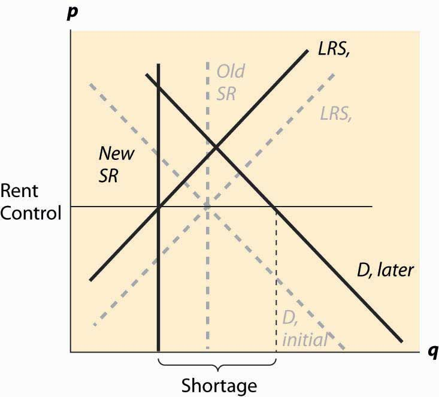

Both demand and supply tend to be more elastic in the long run. This means that the quantity effects of price floors and ceilings tend to be larger over time. An extreme example of this is rent control, a maximum price imposed on apartments.
Rent control is usually imposed in the following way: As a prohibition or limitation on price increases. For example, New York City’s rent control, imposed during World War II, prevented landlords from increasing rent, even when their own costs increased, such as when property taxes increased. This law was softened in 1969 to be gradually replaced by a rent-stabilization law that permitted modest rent increases for existing tenants.
Figure 5.8 Rent control, initial effect

Thus, the nature of rent control is that it begins with, at most, minor effects because it doesn’t bind until the equilibrium rent increases. Moreover, the short-run supply of apartments tends to be extremely inelastic, because one doesn’t tear down an apartment or convert it to a condominium (there were limitations on this) or abandon it without a pretty significant change in price. Demand also tends to be relatively inelastic because one has to live somewhere, and the alternatives to renting in the city are to live a long distance away or to buy (which is relatively expensive), neither of which are very good substitutes for many consumers. Long-run demand and short-run demand are not very different and are treated as being identical. Finally, the long-run supply is much more elastic than the short-run supply because, in the long run, a price increase permits the creation of apartments from warehouses (lofts), rooms rented in houses, and so on. Thus, the apartment market in New York City is characterized by inelastic short-run supply, much more elastic long-run supply, and inelastic demand. This is illustrated in Figure 5.8 "Rent control, initial effect".
We start with a rent-control law that has little or no immediate effect because it is set at current rents. Thus, in the near term, tenants’ fears of price increases are eased and there is little change in the apartment rental market. This is not to say that there is zero effect—some companies considering construction of an apartment building on the basis of an expectation of higher future rents may be deterred, and a few marginal apartments may be converted to other uses because the upside potential for the owner has been removed, but such effects are modest at best.
Figure 5.9 Rent control, long-run effect
Over time, however, the demand for apartments grows as the city population and incomes grow. Moreover, as the costs of operating an apartment rise due to property tax increases, wage increases, and cost of maintenance increases, the supply is reduced. This has little effect on the short-run supply but a significant effect on the long-run supply. The supply reduction and demand increases cause a shortage but results in few apartments being lost because the short-run supply is very inelastic. Over time, however, apartments are withdrawn from the market and the actual quantity falls, even as the demand rises, and the shortage gets worse and worse. These changes are illustrated in Figure 5.9 "Rent control, long-run effect". Dashed gray lines illustrate the old values of demand, short-run supply, and long-run supply. The new values, reflecting an increase in demand, a fall in long-run supply, and a reduction in the number of available apartments (where the rent control covers the long-run cost) are shown in dark black lines.
The shortage is created by two separate factors—demand is increasing as incomes and population rise, and supply is decreasing as costs rise. This reduces the quantity of available housing units supplied and increases the demand for those units.
How serious is the threat that units will be withdrawn from the market? In New York City, over 200,000 apartment units were abandoned by their owners, usually because the legal rent didn’t cover the property taxes and legally mandated maintenance. In some cases, tenants continued to inhabit the buildings even after the electricity and water were shut off. It is fair to say that rent control devastated large areas of New York City, such as the Bronx. So why would New York City, and so many other communities, impose rent control on itself?
The politics of rent control are straightforward. First, rent control involves a money transfer from landlords to tenants, because tenants pay less than they would absent the law, and landlords obtain less revenue. In the short run, due to the inelastic short-run supply, the effect on the quantity of apartments is small, so rent control is primarily just a transfer from landlords to tenants.
In a city like New York, the majority of people rent. A tiny fraction of New Yorkers are landlords. Thus, it is easy to attract voters to support candidates who favor rent control—most renters will benefit, while landlords don’t. The numbers, of course, don’t tell the whole story because, while landlords are small in number, they are wealthier on average, and thus likely have political influence beyond the number of votes they cast. However, even with their larger economic influence, the political balance favors renters. In the 100ab zip codes of Manhattan (the first three digits are 100), 80% of families were renters in the year 2000. Thus, a candidate who runs on a rent-control platform appeals to a large portion of the voters.
Part of the attraction of rent control is that there is little economic harm in the short run, and most of that harm falls on new residents of New York City. As new residents generally haven’t yet voted in New York, potential harm to them has only a small effect on most existing New Yorkers, and thus isn’t a major impediment to getting voter support for rent control. The slow rate of harm to the city is important politically because the election cycle encourages a short time horizon—if successful at lower office, a politician hopes to move on to higher office and is unlikely to be blamed for the long-run damage to New York City by rent control.
Rent control is an example of a political situation sometimes called the tyranny of the majoritySituation where a majority of the people have an incentive to confiscate the wealth of a minority., where a majority of the people have an incentive to confiscate the wealth of a minority. But there is another kind of political situation that is in some sense the reverse, where a small number of people care a great deal about something, and the majority are only slightly harmed on an individual basis. No political situation appears more extreme in this regard than that of refined sugar. There are few U.S. cane sugar producers (nine in 1997), yet the U.S. imposes quotas that raise domestic prices much higher than world prices, in some years tripling the price that Americans pay for refined sugar. The domestic sugar producers benefit, while consumers are harmed. But consumers are harmed by only a small amount each—perhaps 12 to 15 cents per pound—which is not enough to build a consensus to defeat politicians who accept donations from sugar producers. This is a case where concentrated benefits and diffused costsSituation where a small number of people with strong incentives are able to expropriate a small amount per person from a large number of people. determine the political outcome. A small number of people with strong incentives are able to expropriate a small amount per person from a large number of people. Because there aren’t many sugar producers, it is straightforward for them to act as a single force. In contrast, it is pretty hard for consumers to become passionate about 12 cents per pound increase in the domestic sugar price when they consume about 60 pounds per year of sugar.